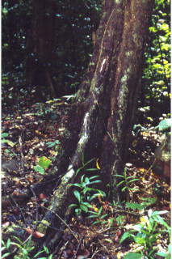

Images :



| Habit : | Trees up to 28 m tall. |
| Leaves : | Leaves simple , alternate , distichous ; petiole 0.7 cm long, canaliculate , hairy when young later glabrous ; lamina 5-15 x 1.8-5 cm, oblong to elliptic-oblong , acuminate with blunt tip, base acute , subcoriaceous , glabrous and shining; midrib raised above; secondary_nerves 6-8 pairs, slender; tertiary_nerves closely_horizontally_percurrent . |
| Inflorescence / Flower : | Flowers unisexual ; male flowers in axillary cymes , tawny pubescent ; female flowers in cauliflorus cymes , rusty tomentose . |
| Fruit and Seed : | Berry , globose , woody , 7 cm across; fruiting_calyx woody ; seeds up to 10, oblong-oval . |